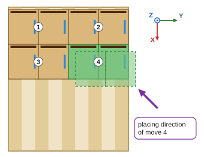
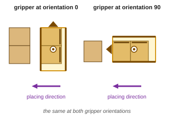
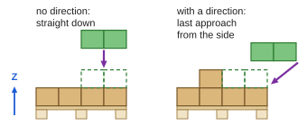

Placing direction
OpenPallet 1.2The placing direction is the direction in which the gripper with the products travels in the last phase of its approach to the placing position, counted in the pallet frame. 900 means placing straight down from above.




- 900: straight down from above, without an approach from the side. 999: not assigned.
- The robot program sets the height and the length of the approach: the file gives only the direction.
| JSON | PLC (tPlacingData, move data) |
CSV column | |
|---|---|---|---|
| placing direction | placing_direction: 0, 45, 90, … 315 |
i16PlacingDirection: 0, 45, … 315 |
PlacingDirection |
| straight down | 900 | 900 | 900 |